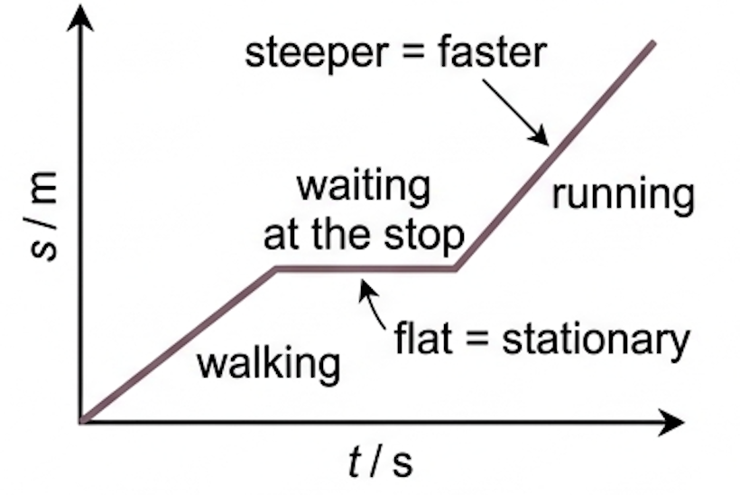
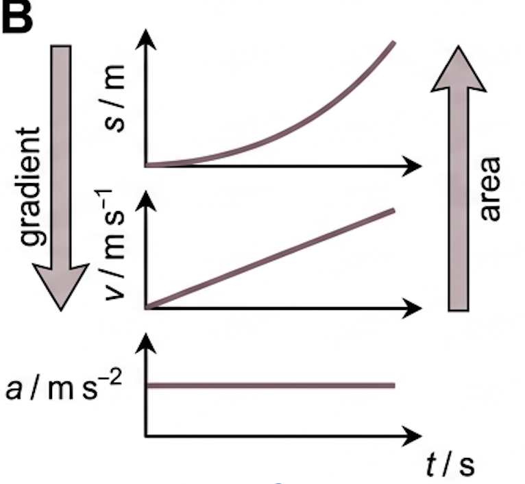
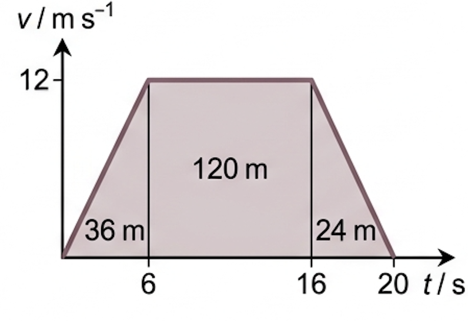

Read a motion graph properly and you never have to guess: the gradient and the area between them hold every quantity a question can ask for.
🎯 Hook – The journey you can see
A student walks towards a bus stop, waits, then runs the last stretch. Nobody recorded her speed — only a distance sensor tracing one line. From that line you can recover how fast she was going at any instant, the moment she stopped, and how far she went in total. A motion graph is not a picture of the path; it is a record of the motion.

Fig 1 — One line, three phases: a steady walk, a horizontal section while waiting, then a steeper run. Steeper means faster; flat means stationary.
💡 Diagnostic question (think – then click) — Two sections of a displacement–time graph have gradients of +3 m s⁻¹ and −3 m s⁻¹. Is the object moving at the same speed in both? Yes — same speed, opposite direction. The sign of the gradient gives direction, its magnitude gives speed.
📐 Gradient down, area up
Three graphs describe the same motion, and two operations move you between them. Taking the gradient moves you down the ladder from displacement to velocity to acceleration. Taking the area under the line moves you back up.
Gradient of a displacement–time graph
$$v = \frac{\Delta s}{\Delta t}$$
Gradient of a velocity–time graph
$$a = \frac{\Delta v}{\Delta t}$$
Going the other way, the area between the line and the time axis is the accumulated change. Area under a velocity–time graph gives displacement; area under an acceleration–time graph gives change in velocity.

Fig 2 — The ladder: gradient takes you downwards (\(s \to v \to a\)), area takes you upwards (\(a \to v \to s\)). Everything a motion question asks for is one step away.
For a curve the gradient is not a single number. Draw a tangent at the instant of interest and take its gradient — that is the instantaneous value. A chord between two points gives the average value over that interval instead.
⚠️ On a curved displacement–time graph, joining two points gives the average velocity between them. Only a tangent gives the velocity at an instant. Exam wording is deliberate — read for "at \(t = 4\ \text{s}\)" versus "between \(t = 0\) and \(t = 4\ \text{s}\)".
Fig 4 — Velocity–time areas: the block above the axis is positive displacement, the block below is negative. Equal areas mean the object is back where it started.
✓ Examiner tip: to find a displacement from a velocity–time graph, split the area into rectangles and triangles and show the arithmetic. Marks go to the method, so a wrong answer with clear areas scores better than a bare correct number.
✍️ Worked example – reading a three-phase journey
A cyclist accelerates uniformly from rest to 12 m s⁻¹ in 6.0 s, holds that speed for 10 s, then brakes uniformly to rest in 4.0 s. Determine the acceleration in the first phase and the total distance travelled.
1
Identify: a velocity–time graph of three straight sections. Acceleration is the gradient of the first section; total distance is the total area under all three.
Answer: \(a = 2.0\ \text{m s}^{-2}\), total distance \(= 36 + 120 + 24 = 180\ \text{m}\). All motion is one way, so the displacement is also 180 m. Average velocity over the 20 s is \(180/20 = 9.0\ \text{m s}^{-1}\) — below 12 m s⁻¹, as expected.

Fig 5 — Geometry for the worked example: the trapezium splits into a triangle, a rectangle and a triangle. Add the three areas for the total distance.
🔧 Real-world: data loggers and crash tests
A motion sensor samples position hundreds of times a second and the software takes gradients to produce velocity and acceleration traces. Vehicle crash tests work the other way round: accelerometers record acceleration directly, and the area under that trace gives the velocity change used to rate the impact.
✓ Examiner tip: sketch questions want shape, not precision — label both axes with quantity and unit, mark the key values, and make gradient changes happen at the right times.
🚀 HL Extension – calculus form
Gradient and area are differentiation and integration: \(v = \dfrac{\mathrm{d}s}{\mathrm{d}t}\), \(a = \dfrac{\mathrm{d}v}{\mathrm{d}t} = \dfrac{\mathrm{d}^2 s}{\mathrm{d}t^2}\), and \(s = \int v\,\mathrm{d}t\). Challenge: a body has \(s = 3t^2 - 2t\) (metres, seconds). Find its velocity at \(t = 2.0\ \text{s}\) and its acceleration. (Answer: \(v = 6t - 2 = 10\ \text{m s}^{-1}\); \(a = 6\ \text{m s}^{-2}\), constant)
⚠️ Trap corner – common mistakes
Misconception
Correct view
A displacement–time graph shows the path taken
The axes are displacement and time. A horizontal line means stationary, not moving horizontally.
The area under a displacement–time graph means something
It has no physical meaning. Area is only useful under velocity–time and acceleration–time graphs.
A curve on a velocity–time graph means the object is turning
It means the acceleration is changing. Direction is shown by the sign of \(v\), not by curvature.
Negative velocity means slowing down
Negative velocity means moving in the negative direction. Slowing down is when \(v\) and \(a\) have opposite signs.
The steepest part of a v–t graph is where the object is fastest
The steepest gradient is the greatest acceleration. Fastest is the highest point on the line.
⚠️ Most common slip: reading a value off the axis instead of taking a gradient. "Find the acceleration at \(t = 3\ \text{s}\)" on a velocity–time graph asks for the gradient there — never the velocity you can read directly.
gradient of s–t = vgradient of v–t = aarea under v–t = sarea under a–t = Δvtangent = instantaneouschord = average
Practice check — multiple choice
1. A displacement–time graph is a horizontal straight line. What does this tell you about the object?
A It moves with constant velocity
B It moves with constant acceleration
C It is stationary
D It moves horizontally at constant speed
2. A velocity–time graph is a straight line from \(v = 8.0\ \text{m s}^{-1}\) at \(t = 0\) down to \(v = 0\) at \(t = 4.0\ \text{s}\). What are the acceleration and the distance travelled?
A \(-2.0\) m s⁻², 32 m
B \(-2.0\) m s⁻², 16 m
C \(-0.50\) m s⁻², 16 m
D \(+2.0\) m s⁻², 32 m
3. An object's velocity–time graph is above the axis for the first 5 s and below it, with an equal area, for the next 5 s. At \(t = 10\ \text{s}\):
A the object has travelled zero distance
B the object is at rest and has zero acceleration
C the displacement equals the distance travelled
D the displacement is zero but the distance travelled is not
4. To find the instantaneous velocity at \(t = 4.0\ \text{s}\) from a curved displacement–time graph you should:
A read the displacement at \(t = 4.0\ \text{s}\) and divide by 4.0
B find the area under the curve up to \(t = 4.0\ \text{s}\)
C draw a tangent at \(t = 4.0\ \text{s}\) and find its gradient
D join the origin to the point at \(t = 4.0\ \text{s}\) and find that gradient
Practice check — fill in the blanks
Complete the statements:
The gradient of a displacement–time graph gives the . The area under a velocity–time graph gives the . To find a value at a single instant on a curve you must draw a .
Exam‑style questions
Exam question · Determine
A car accelerates uniformly from rest to 20 m s⁻¹ in 8.0 s, travels at that speed for 12 s, then decelerates uniformly to rest in 5.0 s. (a) Determine the acceleration during the first phase. [2] (b) Determine the total distance travelled. [3] (c) Calculate the average velocity for the whole journey. [2] [7 marks]
A ball is thrown vertically upwards and caught again at the same height. Taking upwards as positive: (a) sketch the velocity–time graph for the whole flight [2] (b) sketch the acceleration–time graph for the whole flight [2] (c) explain how the velocity–time graph shows that the ball returns to its starting point. [2] [6 marks]
✓ (a) A straight line of constant negative gradient, starting at a positive \(v\) and crossing zero at the highest point ✓ finishing at an equal negative value. ✓ (b) A horizontal line at \(a = -9.8\ \text{m s}^{-2}\) for the whole flight, including at the highest point ✓ (the acceleration is never zero). ✓ (c) The area above the axis (upward displacement) equals the area below the axis (downward displacement) ✓ so the total displacement is zero — the ball is back where it started.
Exam question · Explain
A displacement–time graph for a falling ball is a curve of increasing gradient. (a) Explain what the increasing gradient shows about the motion. [2] (b) A student states that the average velocity between \(t = 0\) and \(t = 2.0\ \text{s}\) equals the instantaneous velocity at \(t = 1.0\ \text{s}\). Discuss whether this is correct. [3] [5 marks]
✓ (a) The gradient of a displacement–time graph is the velocity, so an increasing gradient means the velocity is increasing ✓ the ball is accelerating. ✓ (b) The average velocity is the gradient of the chord from \(t = 0\) to \(t = 2.0\ \text{s}\) ✓ for uniform acceleration this does equal the instantaneous velocity at the midpoint time, so the statement holds for free fall ✓ but it is not general — with non-uniform acceleration (for example with air resistance) the two differ.